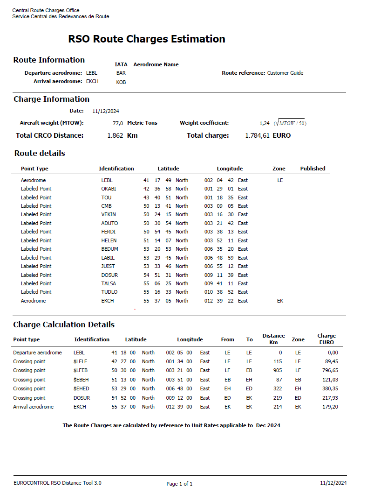
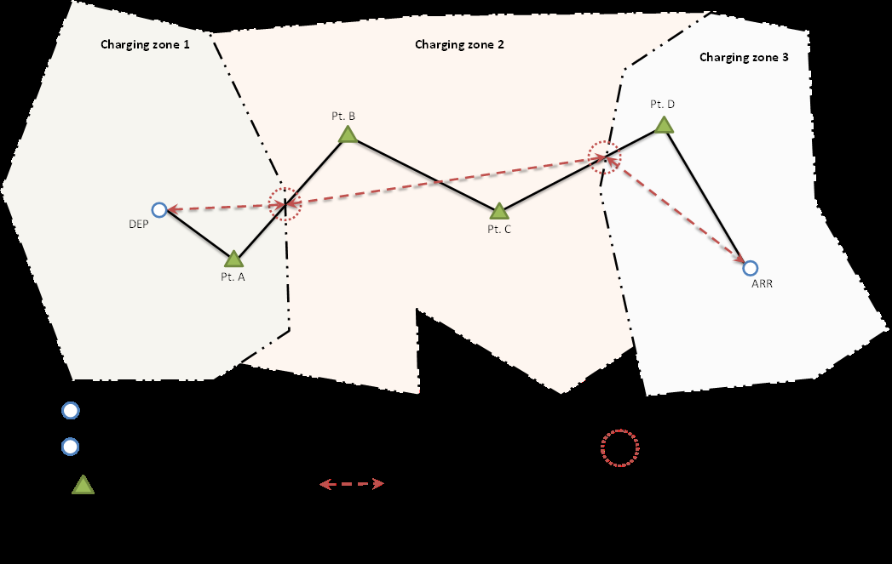

Annexes
Annex A. EUROCONTROL Route Charge Calculation Example
This section provides a concrete calculation example for a flight overflown across multiple charging zones.
Flight Profile
- Flight Connection: LEBL (Barcelona BCN) \(\rightarrow\) EKCH (Copenhagen CPH)
- Aircraft MTOW: 77.0 metric tonnes
- Flight Date: 11 December 2024
Route Description (ICAO FPL Field 15)
LEBL SIDOKABI UN861 FISTO UY156 ADABI UN858 VANAD UN874 VEKIN UN873 ADUTO/N0450F350
UN873 HELEN/N0448F360 UN873 SPY/N0448F350 UN873 GRONY/N0445F370 UN873 JUIST UP729
BATOB/N0439F390 UP729 DOSUR P729 TUDLO STAR EKCHWeight Factor Calculation
Taking the highest certificated MTOW of 77.0 metric tonnes, the weight factor is: \[\text{Weight Factor} = \sqrt{\frac{77.0}{50}} = \sqrt{1.54} \approx 1.24\]
Charge Calculation (December 2024 Tariffs)
The table below summarizes the calculation steps per charging zone overflown:
| State | Distance Factor | Weight Factor | Unit Rate (EUR) | Charge (EUR) | |||
|---|---|---|---|---|---|---|---|
| Spain (LE) | 1.15 | \(\times\) | 1.24 | \(\times\) | 62.73 | \(=\) | 89.45 |
| France (LF) | 9.05 | \(\times\) | 1.24 | \(\times\) | 70.99 | \(=\) | 796.65 |
| Belgium (EB) | 0.87 | \(\times\) | 1.24 | \(\times\) | 112.19 | \(=\) | 121.03 |
| Netherlands (EH) | 3.22 | \(\times\) | 1.24 | \(\times\) | 95.26 | \(=\) | 380.35 |
| Germany (ED) | 2.19 | \(\times\) | 1.24 | \(\times\) | 80.25 | \(=\) | 217.93 |
| Denmark (EK) | 2.14 | \(\times\) | 1.24 | \(\times\) | 67.53 | \(=\) | 179.20 |
| Total | \(=\) | 1,784.61 |
Annex B. RSO Route Charges Estimation
The printout below is generated by the Route per State Overflown (RSO) Distance Tool for the calculation described in Annex A. It shows detailed crossing points, coordinates, and exact zone charge values.

Annex C. Establishing the Distance Factor for International Flights
The diagram below illustrates how flight plan routes are divided into segments to establish the distance factors.

Legend:
DEP* = Departure aerodrome
ARR* = Arrival aerodrome
ATC Points
Flight Plan Route
Charging Zone Boundary
Great Circle Distance
Calculated Crossing Point (on boundary)
- Note: For each take-off and for each landing in a charging zone, 20 km are deducted from the total distance for that charging zone.